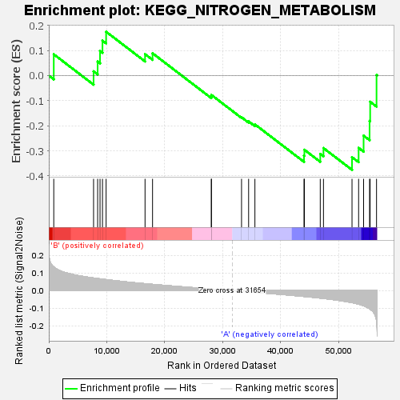

| | | Dataset | my.my.cls#B_versus_A.my.cls#B_versus_A_repos |
| Phenotype | my.cls#B_versus_A_repos |
| Upregulated in class | A |
| GeneSet | KEGG_NITROGEN_METABOLISM |
| Enrichment Score (ES) | -0.3759637 |
| Normalized Enrichment Score (NES) | -1.1306275 |
| Nominal p-value | 0.29174665 |
| FDR q-value | 0.5088293 |
| FWER p-Value | 0.986 |
Table: GSEA Results Summary

Fig 1: Enrichment plot: KEGG_NITROGEN_METABOLISM
Profile of the Running ES Score & Positions of GeneSet Members on the Rank Ordered List
| SYMBOL | TITLE | RANK IN GENE LIST | RANK METRIC SCORE | RUNNING ES | CORE ENRICHMENT | | 1 | GLUL | na | 856 | 0.134 | 0.0847 | No |
| 2 | CA5B | na | 7719 | 0.071 | 0.0169 | No |
| 3 | GLS | na | 8420 | 0.068 | 0.0557 | No |
| 4 | CA6 | na | 8832 | 0.067 | 0.0982 | No |
| 5 | CA5A | na | 9256 | 0.065 | 0.1392 | No |
| 6 | GLUD1 | na | 9882 | 0.062 | 0.1747 | No |
| 7 | CTH | na | 16595 | 0.039 | 0.0853 | No |
| 8 | GLS2 | na | 17888 | 0.035 | 0.0889 | No |
| 9 | AMT | na | 28025 | 0.009 | -0.0836 | No |
| 10 | CA4 | na | 28040 | 0.009 | -0.0773 | No |
| 11 | CA8 | na | 33233 | -0.004 | -0.1661 | No |
| 12 | GLUD2 | na | 34454 | -0.007 | -0.1826 | No |
| 13 | CA12 | na | 35539 | -0.010 | -0.1945 | No |
| 14 | CA3 | na | 44002 | -0.033 | -0.3194 | No |
| 15 | ASNS | na | 44071 | -0.033 | -0.2957 | No |
| 16 | HAL | na | 46806 | -0.042 | -0.3124 | No |
| 17 | CA14 | na | 47361 | -0.044 | -0.2890 | No |
| 18 | CA1 | na | 52282 | -0.068 | -0.3252 | Yes |
| 19 | CA13 | na | 53419 | -0.076 | -0.2882 | Yes |
| 20 | CA9 | na | 54279 | -0.086 | -0.2394 | Yes |
| 21 | CA7 | na | 55308 | -0.102 | -0.1810 | Yes |
| 22 | CPS1 | na | 55410 | -0.105 | -0.1044 | Yes |
| 23 | CA2 | na | 56509 | -0.168 | 0.0020 | Yes |
Table: GSEA details [plain text format]
Fig 2: KEGG_NITROGEN_METABOLISM
Blue-Pink O' Gram in the Space of the Analyzed GeneSet
Fig 3: KEGG_NITROGEN_METABOLISM: Random ES distribution
Gene set null distribution of ES for KEGG_NITROGEN_METABOLISM